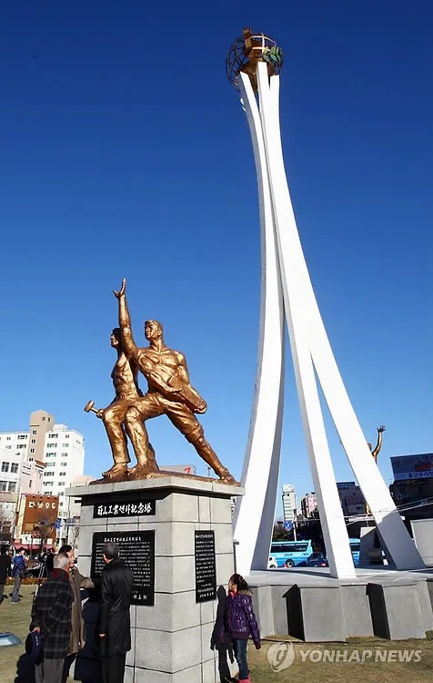

여행지 검색
여행지 검색
마이페이지
나의 여행일정
나의 정보수정
로그인
로그아웃
🔍
총
29
건

공업탑
울산광역시
1960년대 신생 대한민국이 중공업을 육성하기 위해 울산을 특정공업도시로 지정했을 때 이를 기념하기 위해 1967년 4월 20일에 세운 조형물이다.
공업탑
울산광역시
1960년대 신생 대한민국이 중공업을 육성하기 위해 울산을 특정공업도시로 지정했을 때 이를 기념하기 위해 1967년 4월 20일에 세운 조형물이다.
공업탑
울산광역시
1960년대 신생 대한민국이 중공업을 육성하기 위해 울산을 특정공업도시로 지정했을 때 이를 기념하기 위해 1967년 4월 20일에 세운 조형물이다.
공업탑
울산광역시
1960년대 신생 대한민국이 중공업을 육성하기 위해 울산을 특정공업도시로 지정했을 때 이를 기념하기 위해 1967년 4월 20일에 세운 조형물이다.
공업탑
울산광역시
1960년대 신생 대한민국이 중공업을 육성하기 위해 울산을 특정공업도시로 지정했을 때 이를 기념하기 위해 1967년 4월 20일에 세운 조형물이다.
리셋
#전체
#서울
#부산
#대구
#인천
#광주
#대전
#울산
#세종
#경기
#강원
#충북
#충남
#경북
#경남
#전북
#전남
#제주
#관광지
#문화시설
#축제공연행사